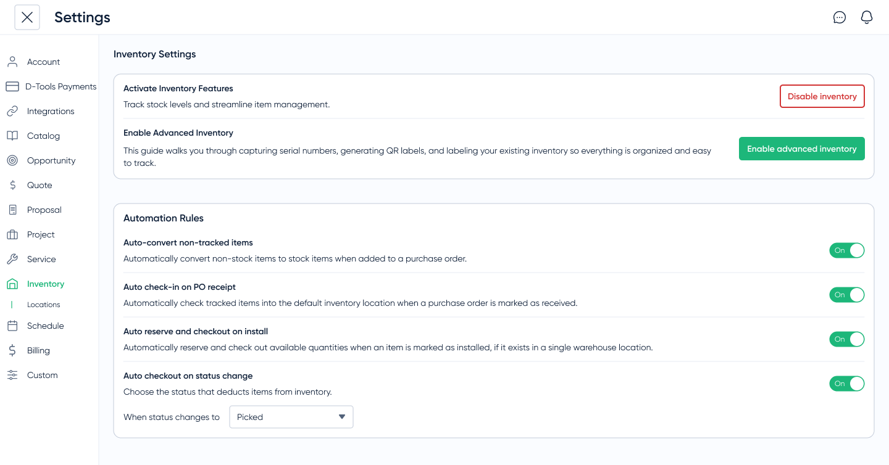

Real-Time Inventory
Inventory was both a workflow gap and a sales blocker. Enterprise prospects expected it to connect with purchasing and project work, while existing customers relied on spreadsheets or external tools because the product lacked a trustworthy source of truth.
We designed Inventory Management into a real-time system spanning projects, locations, and purchasing, reducing manual reconciliation, improving accuracy, and helping drive an 18% increase in recurring revenue.
At a glance
- Business Problem: Customers managed inventory in external spreadsheets, causing tracking errors and blocking enterprise sales deals.
- My Key Decisions: Architected a unified real-time inventory model across purchasing, projects, and locations—prioritizing inventory data accuracy over complex automation for MVP.
- Impact & Outcomes: Contributed to an 8% increase in product adoption and an 18% increase in recurring revenue, and unblocked enterprise deal sign-offs.
Problem
Project managers spent hours every week reconciling stock across spreadsheets and external tools, and enterprise prospects increasingly expected inventory to be part of a modern operations platform. Without integrated inventory, teams lacked a trustworthy source of truth and D-Tools risked losing deals to competitors with more complete workflows.
Objectives
- Eliminate manual tracking and errors
- Eliminate dependency on additional software
- Automate alerts and reorders
- Integrate with purchasing/projects
Research Insights
I mapped how teams tracked inventory outside the product, usually across spreadsheets or paid tools like Jetbuilt. One power user maintained a master spreadsheet with 14 tabs: one per project, plus cross-reference sheets, reconciliation logs, and a manual low-stock tracker highlighted in yellow. It took her two hours a day to keep current, and decisions were still made from stale data.
Across 6 user interviews and workflow mapping sessions, the pattern was consistent:
- Time sink: 2–3 hours/day reconciling stock; user-reported roughly 15–20% error rates
- User split: Small AV shops needed fast confidence in quantities, while larger teams needed asset‑level traceability for accountability
- Market signal: Integrated inventory was table stakes in enterprise deals
Defining Decision
We could have shipped a simpler, spreadsheet-like solution with periodic updates.
Instead, I pushed for a real-time, unified inventory system across projects and locations (such as warehouses, vans, and job sites). While this added technical complexity, it eliminated duplicate sources of truth and ensured teams could trust inventory data everywhere.
Enterprise-First Design Tradeoff
The hardest challenge was determining how much enterprise capability needed to exist on day one.
Enterprise customers required sophisticated workflows, but exposing every capability immediately would have created unnecessary complexity for smaller customers.
The solution was creating an enterprise-capable foundation while keeping day-to-day workflows approachable.
Legacy spreadsheet workflow
Some users manually reconciled counts, split data across tabs, and made decisions from stale information.
Money spent on another tool
Most users used another piece of software, like Jetbuilt, to manage inventory. Multiple tools meant more error-prone workflows and extra costs for users.
Unified real-time inventory
A single source of truth surfaced stock risk early, reduced reconciliation, and made decisions faster and more reliable.
System Model & Tradeoffs
The core design challenge was not just showing inventory. It was defining how inventory changed state across purchasing, receiving, project allocation, location transfers, and asset-level tracking. A flat quantity would not explain why an item was available, allocated, incoming, or low-stock.
I worked with PM and engineering to align on a real-time model across projects, stock, and locations. That added complexity, but it removed duplicate sources of truth and made inventory data trustworthy everywhere users encountered it.
- Receiving defines truth: Inventory updates when a PO is received, including partial receiving, so users are not reconciling stale counts later
- Quantity-first by default: Smaller teams can quickly trust stock counts without managing unnecessary asset-level detail
- Asset-level when needed: Larger teams can track specific items for accountability, permissions, and enterprise workflows
- Manual reordering for MVP: Automatic purchasing was deferred because permissions, trust, and expensive unintended purchases made confirmation safer for the first release

For handoff, I documented how allocations, multi-location states, and receiving/reordering rules affect available inventory, so UI behavior stays consistent as the system model gets implemented. The shared data model was aligned with engineering first, so the UI explains state rather than just showing flat quantities.
Prototyping & Validation
I ran three rounds of high-fidelity Figma tests to validate receiving, alerts, multi-location inventory, and reordering flows. Testing confirmed the quantity-first default was easier for smaller teams, while asset-level tracking remained necessary for larger teams with accountability requirements.
Impact
The system replaced fragmented tracking with a single source of truth, reducing reconciliation time, improving project accuracy, and surfacing unused inventory.
One customer uncovered thousands of dollars in unused equipment, highlighting how much value had been hidden in disconnected workflows.
The release removed a recurring blocker in enterprise sales conversations and contributed to an 18% increase in recurring revenue over the following year.
Lessons & Next Steps
The biggest lesson was that operational products earn trust through state clarity. Users did not just need to know how many items were in stock; they needed to understand why the number was trustworthy, where it came from, and what would happen next.
- Next: Now that teams trust the counts, the natural next step is auto-PO creation from thresholds and mobile scanning, automating the parts we intentionally held back in the MVP.